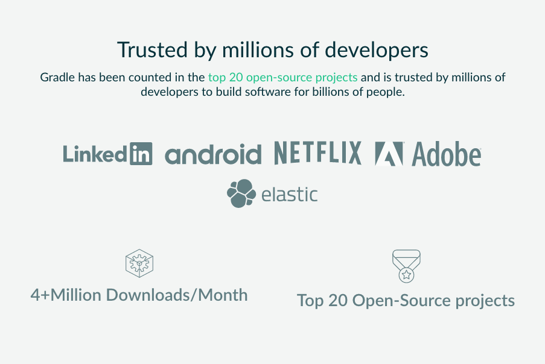

What is gradle ?
- Gradle is an open source, advanced general purpose build management system
- Gradle supports the automatic download and configuration of dependencies or other libraries
- It supports retrieving these dependencies from Maven and Ivy repositories .
- Gradle supports multi-project and multi-artifact builds
- It has built-in plugins for Java , Scala ,Groovy and Kotlin (that i know of)
Why Gradle ?
- Declarative - it much easier to read gradle files than maven or ant xml's
- Flexible - allows a lot of customization of build process
- Open source - licence: Apache
- 
Gradle Introduction
- A Gradle build consists of one or more projects.
- Projects can be something which should be built or something that should be done.
- Each project consists of tasks.
- A task represents a piece of work which a build performs, e.g., compile the source code or generate the Javadoc.
-
Sample Gradle Task
task hello{ doFirst{ println "I am a sample task" } }
The build.gradle file
group 'zw.co.afrosoft.parks'
version '1.0.0'
apply plugin: 'java'
sourceCompatibility = 1.8
repositories {
mavenCentral()
}
dependencies {
compile 'org.apache.commons:commons-csv:1.3'
testCompile group: 'junit', name: 'junit', version: '4.12'
compile fileTree(dir: 'libs', include: ['*.jar'])
}
Java Plugin Tasks
| Task Name | Type | Description |
|---|---|---|
| compileJava | JavaCompile | Compiles production Java source files using javac. |
| build | Task | Performs a full build of the project. |
| test | Test | Runs the unit tests using JUnit or TestNG. |
| javadoc | Javadoc | Generates API documentation for the production Java source, using Javadoc |
| clean | Delete | Deletes files created by specified task. cleanJar will delete the JAR file created by the jar task, and cleanTest will delete the test results created by the test task. |
Further reading
docs.gradle.org/current/userguide/java_plugin.html
The build.gradle file
group 'zw.co.afrosoft.parks'
version '1.0.0'
apply plugin: 'java'
sourceCompatibility = 1.8
repositories {
mavenCentral()
maven {
url "https://maven.vas.co.zw/"
}
}
dependencies {
compile group: 'com.google.code.gson', name: 'gson', version: '2.8.2' //long form
compile 'org.apache.commons:commons-csv:1.3' // short form
compile fileTree(dir: 'libs', include: ['*.jar'])
testCompile group: 'junit', name: 'junit', version: '4.12'
}
The build.gradle file
group 'zw.co.afrosoft.parks'
version '1.0.0'
apply plugin: 'java'
sourceCompatibility = 1.8
repositories {
mavenCentral()
maven {
url "https://maven.vas.co.zw/"
}
}
dependencies {
compile group: 'com.google.code.gson', name: 'gson', version: '2.8.2' //long form
compile 'org.apache.commons:commons-csv:1.3' // short form
compile fileTree(dir: 'libs', include: ['*.jar'])
testCompile group: 'junit', name: 'junit', version: '4.12'
}
Maven VS Gradle
A depency in maven
<dependency>
<groupId>org.springframework.boot</groupId>
<artifactId>spring-boot</artifactId>
<version>1.5.7.RELEASE</version>
</dependency>
A depency in gradle
compile 'org.springframework.boot:spring-boot:1.5.7.RELEASE'
Maven VS Gradle
A plugin in maven
<build>
<plugins>
<plugin>
<groupId>org.apache.maven.plugins</groupId>
<artifactId>maven-compiler-plugin</artifactId>
<version>2.3.2</version>
</plugin>
</plugins>
</build>
A plugin in gradle
apply plugin:'java'
Installing Gradle
Instructions available at gradle.org/install/
DEMO TIME !!!
<Thank You!>